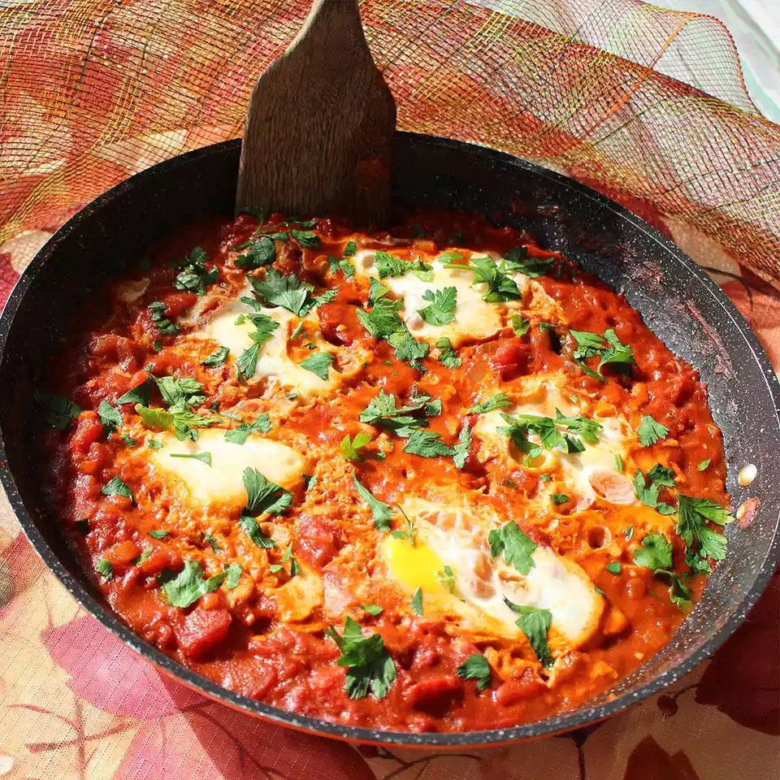

Description
(on this page, all sources, images or text, are borrowed from allrecipes.com. This page is for practice only)
This Mexican-inspired shakshuka recipe is a one-skillet poached egg dish hearty enough to feed a crowd. It's full of all the flavors you expect from Mexican recipes — tomatoes, onions, smoked peppers, cumin, chili powders, and Spanish paprika. Serve with warmed corn or flour tortillas and butter-fried hominy.
Ingredients
- 2 tablespoons vegetable oil
- 1 cup diced onion
- 1 (8 ounce) jar roasted red bell peppers, drained and chopped
- 1 tablespoon minced garlic
- 3 tablespoons Hunt's® Tomato Paste
- 1 teaspoon chili powder
- 1 teaspoon ground ancho chile powder
- 1 teaspoon ground cumin
- 1 teaspoon Spanish paprika
- 2 (14.5 ounce) cans Hunt's® Diced Tomatoes, undrained
- ½ cup water
- salt and pepper to taste
- 6 large eggs, or more as needed
Steps
- Heat oil in a skillet over medium heat. Sauté onion in hot oil until translucent and tender, about 5 minutes. Add roasted peppers and garlic; sauté until fragrant, 1 to 2 minutes. Stir in tomato paste, chili powders, cumin, and paprika. Sauté until well combined, 1 to 2 minutes more.
- Stir in tomatoes and water. Season with salt and pepper. Raise heat to medium-high and bring mixture to a boil. Immediately reduce heat to medium and cook for about 5 minutes.
- Reduce heat to medium-low. Make a well in tomato mixture for each egg; pour 1 egg into each well. Cover; poach until whites are firm and yolks have thickened but are not hard, 2 1/2 to 5 minutes.
Return to Homepage